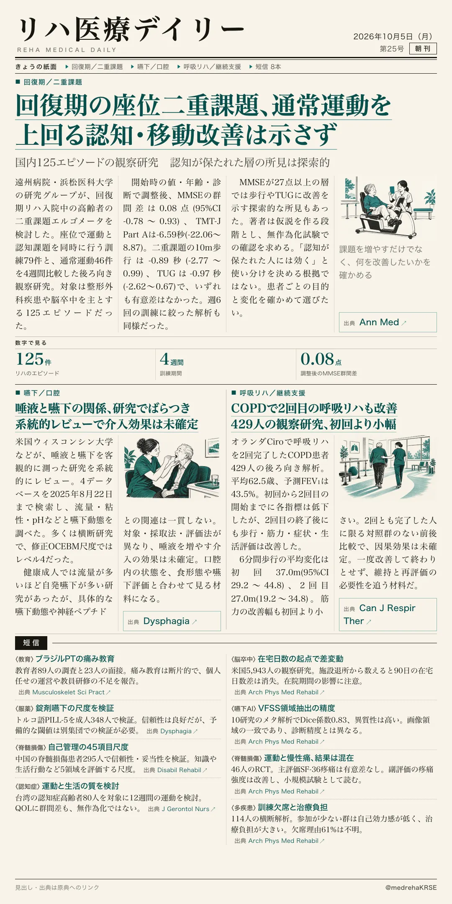
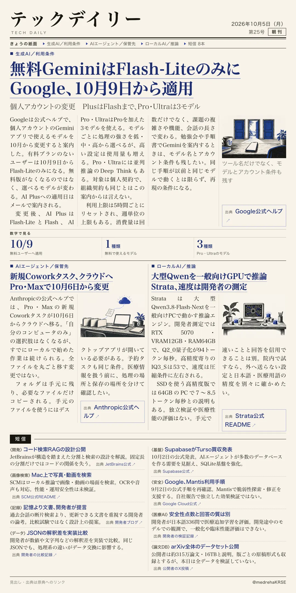

リハ医療デイリー
回復期の座位二重課題、通常運動を上回る認知・移動改善は示さず
国内125エピソードの観察研究 認知が保たれた層の所見は探索的
静岡県の遠州病院・浜松医科大学の研究グループが、回復期リハ入院中の高齢者を対象に、座位で運動と認知課題を同時に行う二重課題エルゴメータを検討しました。整形外科疾患や脳卒中を主とする125エピソードで、二重課題79件と通常のエルゴメータ46件を4週間比較した後ろ向き観察研究です。

テックデイリー
無料GeminiはFlash-LiteのみにGoogle、10月9日から適用
個人アカウントの変更 PlusはFlashまで、Pro・Ultraは3モデル
Googleが公式ヘルプで、2026年10月から個人アカウントのGeminiアプリで使えるモデルを変更すると案内しています。AIの有料プランを契約していないユーザーは、10月9日からFlash-Liteのみとなります。無料版そのものがなくなるのではなく、選べるモデルが変わるという告知です。AI Plusへの適用日はメールで案内されます。
